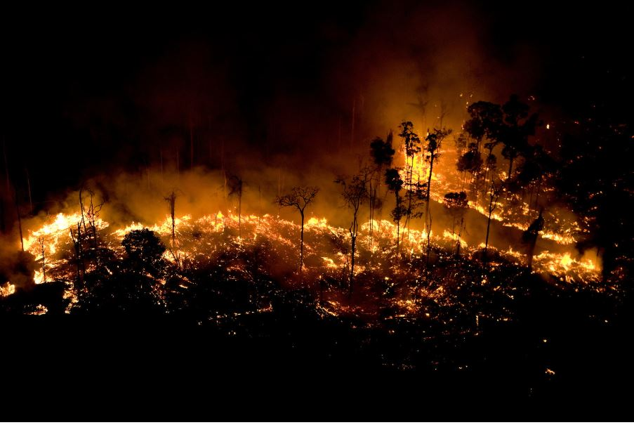
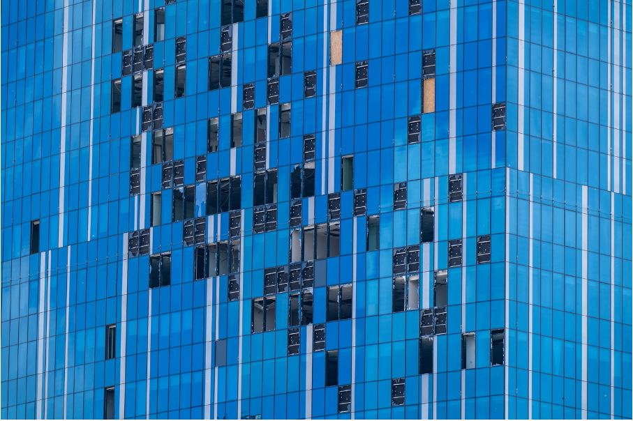

Bosques del Amazonas despues de un incendio provocado Bosques del Amazonas despues de un incendio provocado |
 Plantaciones de Aceite de Palma, Indonesia Plantaciones de Aceite de Palma, Indonesia |
Arboles quemados para la produccion agricola, el Congo |
 Arbol de Castaña protegido yace caido, Brasil Arbol de Castaña protegido yace caido, Brasil |
 Vista del Glaciar Breidamerkurjokull Vista del Glaciar Breidamerkurjokull |
 Río Ytri-Rangá de Islandia Río Ytri-Rangá de Islandia |
 Río Thjorsa Río Thjorsa |
 Iceberg en el Oceano Austral Iceberg en el Oceano Austral |
 Iceberg revela su verdadero tamaño bajo el agua Iceberg revela su verdadero tamaño bajo el agua |
 Oso Polar sobre hielo marino en el Océano Ártico Oso Polar sobre hielo marino en el Océano Ártico |
 Pelicanos, esperando ser limpiados de petroleo Pelicanos, esperando ser limpiados de petroleo |
 Barcos cerca de la boca del Pozo Deepwater Horizon Barcos cerca de la boca del Pozo Deepwater Horizon |
 Misil ruso que no ha podido explotar Misil ruso que no ha podido explotar |
 Charcos de agua del deshielo, Groenlandia Charcos de agua del deshielo, Groenlandia |
 Cerca electrica alcanzada por 9 misiles rusos, Ucrania Cerca electrica alcanzada por 9 misiles rusos, Ucrania |
Torre de negocios afectada por la invasion rusa, Ucrania |